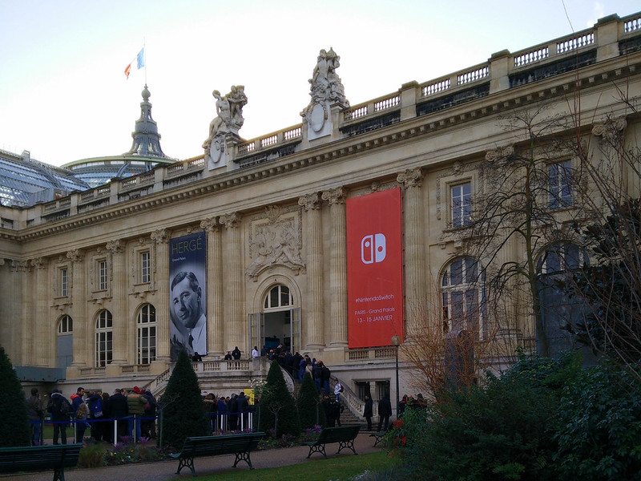
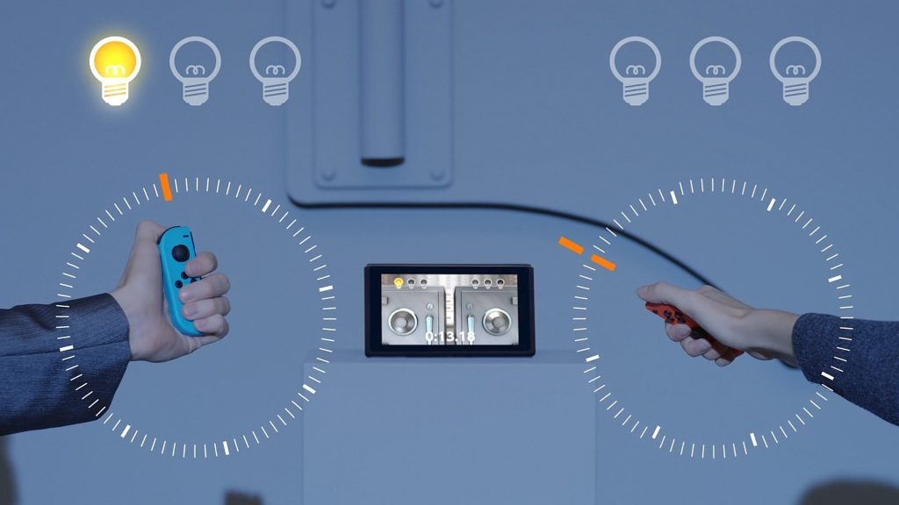
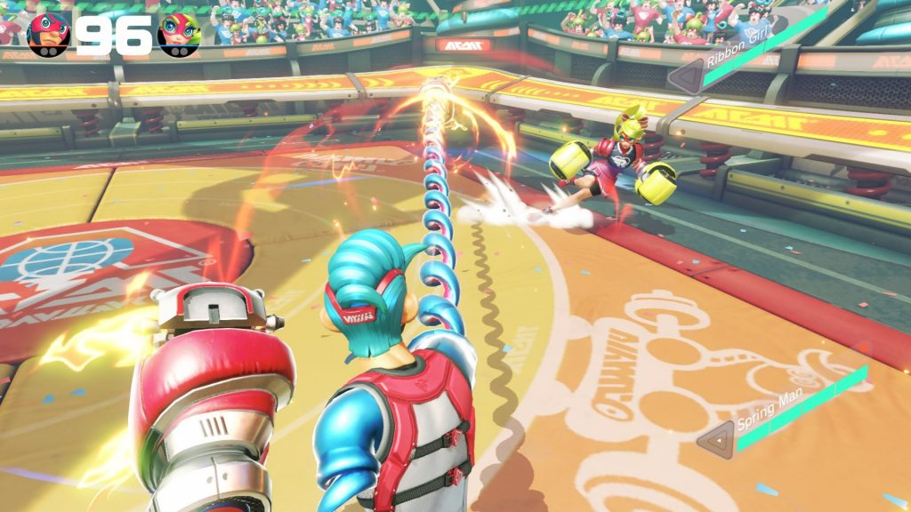
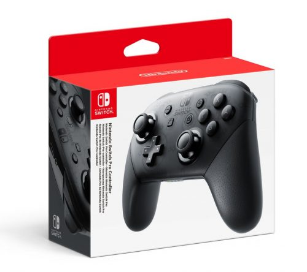

30 janvier 2017
J'ai essayé la Nintendo Switch !

Le Grand Palais[/caption]Dans des jeux comme Arms, le gyroscope intégré retranscrit les mouvements et permet de faire tout un tas de choses : déplacement, coups spéciaux, coup de poing courbé. Pareil dans 1,2 Switch avec le mini-jeu Copy Dance où l'on doit imiter la pose de son adversaire. La fonction « HD Rumble » est assez impressionnante, j'étais un peu perplexe face a la vidéo de présentation de Nintendo mais une fois en main, on est surpris par la vibration du moteur dans Mario Kart ou encore la sensation de sentir des billes dans le jeu Balls Count de 1, 2 Switch. Une fonctionnalité sympathique que l'on espère voir exploitée dans d'autres jeux.
Dans la démo de Mario Kart 8 Deluxe, j'ai pu jouer avec le Joy-Con dans un volant-grip. Heureusement il était possible d'utiliser le stick et non pas le gyroscope. Dans Snipperclips, les Joy-Cons sont utilisés de manière plus traditionnelles pour diriger le personnage. Après ces jeux en mode « Salon », j'ai pu essayer le mode portable de la console avec Sonic Mania. Difficile d'avoir un ressenti réel du poids de la console, mais on imagine facilement qu'il sera similaire au gamepad de la Wii U. La prise en main est plutôt bonne et l'écran vraiment bon. J'ai vraiment eu l'impression de rejouer à Sonic à l'époque de la Game Gear 😉Dans l'ensemble la console me plait vraiment, c'est un beau combo des deux dernières console de Nintendo et on sent que la finition est plus aboutie, moins plastique, plus mature. Là où le bas blesse : un prix, selon moi trop élevé autant la console que les accessoires, une autonomie faible en mode portable, ajoutez à ça que les accessoires/manettes de Wii/Wii U ne seront pas compatibles (sauf Amiibo) et que la batterie n'est pas amovible. #IlFautToutRacheter 💰
 Le mode « Table-top »[/caption]
Le mode « Table-top »[/caption]
J'ai essayé 1, 2 Switch et ses mini-jeux : c'est très fun et permet de jouer entre amis en soirée, on retrouve ici un peu Wii Sports/Wii Play en moins complet. Le titre permet de prendre en main les Joy-Cons et de tirer parti de leur gyroscope comme évoqué précédemment. Malgré un bon feeling je ne suis pas convaincu, on imagine une durée d'1h/2h pour faire le tour du jeu et cela ne justifie pas 50 € en caisse. Pourquoi ne pas avoir mis le jeu en bundle avec la console comme cela avait été fait pour Wii Sports et Nintendoland ?
[caption id="attachment_3761" align="aligncenter" width="792"]
Il va falloir braquer un coffre-fort pour se payer la Switch et ses accessoires[/caption]J'ai ensuite essayé Mario Kart 8 Deluxe, rien de bien innovant, on joue sur un portage de Mario Kart 8 sorti sur la Wii U. Quelques nouveaux personnages font leurs apparitions : Bowser Jr, Dry Bones, King Boo et les deux Inklings de Splatoon. On nous a proposé soit une course soit le mode bataille qui fait son grand retour avec des vrais terrains adaptés. Au final on a fait une course sur la piste Big Blue. Rien de plus à dire sur Mario Kart 8 Deluxe, visuellement on ne perçoit pas de différence avec la version Wii U, on appréciera juste les petits plus de cette version. Dommage de ne pas avoir sorti ce titre en même temps que la Switch ou même de l'avoir proposé en bundle.
La nouvelle licence de Nintendo était bien présente : Arms. Le jeu est très fun et propose une direction artistique vraiment travaillée. Le titre exploite donc les Joy-cons et propose une expérience de jeu similaire à la boxe sur Wii Sports mais en ajoutant des mécaniques plus complexes : des bras extensibles sous différentes formes : chaînes, rubans, élastiques. Les personnages ont l'air tout droit sorti d'un manga, on pense à Luffy de One Piece 😉
Après un tutoriel rapide pour appréhender les contrôles, on se bastonne à tout va : rush, coups courbés, coups spéciaux, bouclier. On sent que Nintendo veut mettre en valeur cette licence, mais je sens que le titre sera léger, et pour moi 50 € pour un jeu de boxe, c'est trop aussi.

Pour finir et pour moi le coup de cœur de cette session, c'est Snipperclips, un puzzle-game plateforme comme je les aime. Ici on joue en collaboration pour évoluer dans un niveau en dirigeant des petites formes géométriques. Ces formes sont capables de se découper entre-elles et de prendre d'autres formes pour pouvoir appuyer sur des boutons, percer des ballons, transporter des objets... La prise en main est rapide et l'on doit réfléchir à comment se placer et comment résoudre le puzzle. Les quelques stages m'ont convaincu, tant par l'aspect graphique décalé que par les possibilités. On imagine très bien un éditeur sur ce genre de jeu pour faire durer le plaisir. Un must si vous avez aimé BoxBoy sur 3DS. Pour 30 € je pense que je me le prendrais.
En à peine 4h je n'ai pas pu essayer d'autres jeux sur le salon, certains par choix, d'autres à cause des longues files d'attente. Il n'a pas été non plus possible d'essayer de clipser/déclipser les Joy-Cons ou de voir le système d'exploitation de la console. Malgré cela je suis plutôt content d'avoir pu essayer la Switch sur différentes configurations : TV, Portable, Tabletop. et j'ai même pu croiser Satoru Shibata, le président de Nintendo of Europe 😉
Mon avis général : je suis très mitigé... la console est vraiment géniale et propose de jouer autant en salon qu'en mode portable et c'est vraiment le point fort. Le retour du motion gaming est intéressant et on espère avoir des titres plus poussés que 1, 2 Switch ou Just Dance pour exploiter à fond les « Joy-cons » Mais niveau jeux c'est pour le moment assez faible... beaucoup de suites/portages comme Mario Kart, Splatoon, Skyrim, Bomberman... Des jeux sympas mais relevant plus de démo technique : Arms/1,2 Switch. Les deux seuls titres qui à mon sens justifieront l'achat de la console sont The Legend of Zelda : Breath of the Wild et Super Mario Odyssey qui malheureusement n'était pas jouable au Grand Palais.
Le prix de la console et sa rétro-compatibilité inexistante (tant avec les jeux que les accessoires de la Wii U/3DS) sont vraiment un frein et il faudra débourser plus de 400 € si l'on veut acquérir la console, un jeu et une manette Pro Controller.

70 € un Pro Controller et évidemment celui de la Wii U n'est pas compatible 😨[/caption]Je suis pour ma part un grand fanboy de Nintendo, mais vais-je acheter la console Day-One ? Pas si sûr. On peut espérer d'autres annonces avant le 3 mars et j'attends de voir en détails le système de la console, la politique de Nintendo sur le jeu en ligne (qui va devenir payant), les caractéristiques de la bête, un possible transfert des jeux dématérialisé de la Wii U vers la Switch (S'il vous plait !).
Ce que j'attends de la Switch dans les mois à venir : le retour de licences comme Advance Wars, Metroid, Golden Sun et aussi un jeu Pokémon RPG avec de belles textures HD. De grosses annonces seront faites à l'E3 sans aucun doute.
Sur ce, je m'en vais dépoussiérer ma Wii U pour patienter 😉
Commentaires 0
Aucun commentaire.